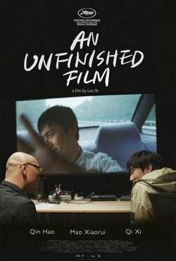

0.0
一部未完成的电影
An Unfinished Film
2024
中国
评分 0.0
导演:
娄烨
演员:
秦昊 / 梁鸣 / 毛小睿 / 齐溪 / 黄轩 / 张颂文
类型:
剧情
剧情简介
在停拍十年的电影计划被重新启动的那一刻，武汉的冬天依旧带着潮湿寒意。剧组成员在仓库般的摄影棚里忙碌重整设备，灯光一盏盏被点亮，仿佛所有人都在以各自的方式迎接一个迟来的开端。江诚站在场记板旁，手指轻轻触过旧器材，既有熟悉的温度，也有岁月留下的疲惫。导演与演员们围坐在临时会议桌前，讨论着如何拾回十年前的情绪与节奏，空气里弥漫着久别重逢的复杂感。然而，城市的节奏在不经意间发生了变化。街道上逐渐稀少的人流、医院周围突增的警戒线、新闻里反复播放的提示，都让剧组产生难以名状的不安。封城的消息在清晨突然传来，像一扇门在众人身后被重重扣上，所有通往外界的路径随之中断。剧组人员被留在城市里，每个人都在困境中重新面对自己，尝试在混乱的信息与骤变的现实间寻找方向。拍摄被迫暂停，但镜头却没有停止记录。窗外的警报声、走廊里紧张的脚步、深夜里彼此交错的低语——突然成为影片之外的“新素材”。在有限的空间里，演员们尝试排练、记录、交流，戏里戏外渐渐交叠，情绪在困顿与希望之间摇摆。江诚在空荡的房间里反复阅读剧本，他的声音在静默中显得格外清晰，而镜头捕捉到的，不再只是角色，而是一个人在极端境遇下的真实脉动。随着时间推移，城市的封闭状态让每个人不得不直面恐惧、孤独与无法逃避的现实。剧组成员在疲惫中彼此扶持，一些人开始拍下窗外的风景，一些人重新审视自己对创作与生活的坚持。影片未完成的部分与现实正在发生的事件交织成一种奇异的镜像，仿佛命运在此刻将创作与生活绑在一起重写。在未知与封锁中，这部“未完成的电影”渐渐呈现出新的面貌——它不仅记录了一个剧组的困境，更映照了一个时代的记忆，那些被压抑、被遗忘、被反复讨论又被沉默的声音，都在镜头下显露出微弱却真实的光。